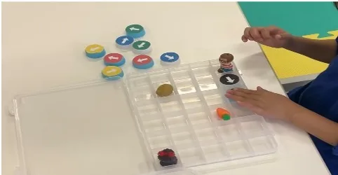

Evaluation
ほしのこ中央
事業所評価
年度ごとの評価表・自己評価総括表を、旧サイトと同じ探し方で確認できるよう整理しています。

資料について
旧サイト掲載PDFの正式URLが確認できないため、現在は資料ごとに「PDF直リンク要確認」としています。PDF URLを確認後、資料名そのものを直接PDFへのリンクに差し替えてください。
2025年度
- 📄 放課後等デイサービス評価表（保護者向け）PDF直リンク要確認
- 📄 放課後等デイサービス評価表（事業者向け）PDF直リンク要確認
- 📄 放課後等デイサービス自己評価総括表PDF直リンク要確認
2024年度
- 📄 放課後等デイサービス評価表（保護者向け）PDF直リンク要確認
- 📄 放課後等デイサービス評価表（事業者向け）PDF直リンク要確認
- 📄 放課後等デイサービス自己評価総括表PDF直リンク要確認
2023年度
- 📄 放課後等デイサービス評価表（保護者向け）PDF直リンク要確認
- 📄 放課後等デイサービス評価表（事業者向け）PDF直リンク要確認
2022年度
- 📄 放課後等デイサービス評価表（保護者向け）PDF直リンク要確認
- 📄 放課後等デイサービス評価表（事業者向け）PDF直リンク要確認
2021年度
- 📄 放課後等デイサービス評価表（保護者向け）PDF直リンク要確認
- 📄 放課後等デイサービス評価表（事業者向け）PDF直リンク要確認
2020年度
- 📄 放課後等デイサービス評価表（事業所向け）PDF直リンク要確認
- 📄 放課後等デイサービス評価表（保護者向け・ご意見と回答）PDF直リンク要確認
- 📄 放課後等デイサービス評価表（保護者向け・集計結果）PDF直リンク要確認
2019年度
- 📄 放課後等デイサービス評価表（保護者向け）PDF直リンク要確認
- 📄 事業所評価（事業所）PDF直リンク要確認
- 📄 放課後等デイサービス評価表（事業所向け）PDF直リンク要確認
2018年度
- 📄 放課後等デイサービス評価表（保護者向け） ご意見・回答PDF直リンク要確認
- 📄 放課後等デイサービス評価表（保護者向け） 集計結果PDF直リンク要確認
- 📄 放課後等デイサービス評価表（事業所向け）PDF直リンク要確認
- 📄 放課後等デイサービス評価表（事業所向け） 集計結果PDF直リンク要確認
- 📄 事業所評価（事業所向け）PDF直リンク要確認
Contact
見学・ご利用について、お気軽にご相談ください
ご利用に関するご相談、施設見学、関係機関からのお問い合わせなど、内容に合わせてご案内いたします。